Sección 1Resumen
- Backend
- 58pruebas automatizadas
- App
- 29pruebas automatizadas
- Contra la API real
- 60+casos verificados a mano
- Defectos
- 17encontrados y corregidos
cd backend && npm test # 58 pruebas, ~2 segundos
cd app && flutter test # 29 pruebas
Las dos suites corren en cada push a main y
develop, junto con el análisis estático y el build web.
Sección 2Qué se prueba automáticamente y por qué
Las pruebas automatizadas no cubren todo el sistema, y es a propósito. Cubren la lógica donde un error cuesta plata, que es distinto de cubrir la lógica que es fácil de probar.
2.1 Backend
Son pruebas unitarias con Prisma simulado: no necesitan PostgreSQL, corren en dos segundos y no dependen del estado de los datos.
| Archivo | Casos | Qué protege |
|---|---|---|
password.service.spec.ts | 9 | Es lo único entre la cuenta de un despensero y cualquiera que adivine su correo |
codigos.service.spec.ts | 10 | Un código de 6 dígitos tiene un millón de combinaciones: lo protegen el vencimiento, el uso único y el límite de intentos |
movimientos.service.spec.ts | 18 | Decide cuánta plata debe cada cliente |
despensas.service.spec.ts | 12 | Un error acá no rompe nada visible: le miente al despensero sobre su negocio |
clientes.service.spec.ts | 10 | Fija la definición de mora, que fue una decisión de diseño discutible |
Si alguien las cambia sin querer, la prueba falla y lo obliga a pensar:
- “una corrección tardía descuenta del mes en que se hizo” — el mes anterior ya está cerrado y no se reescribe, como en contabilidad.
- “SÍ marca en mora a quien compró ayer pero no paga hace meses” — la mora se mide desde el último pago, no desde la última compra.
2.2 App
| Archivo | Casos | Qué cubre |
|---|---|---|
widget_test.dart | 3 | Formato y lectura de guaraníes |
whatsapp_test.dart | 4 | Conversión de teléfonos paraguayos al formato internacional |
dominio_test.dart | 22 | Efecto de cada movimiento sobre el saldo, veredicto de salud del negocio, lectura de errores de la API, armado del mensaje de método de pago, y qué promete la franja de sin conexión |
2.3 Lo que las pruebas automatizadas no cubren
Es tan importante saberlo como saber qué sí cubren.
- Migraciones de base de datos. Se verifican al aplicarlas contra Neon.
- Restricciones de unicidad. Viven en PostgreSQL, no en el código.
- Concurrencia real. Requiere una base de verdad; se verificó a mano y está documentado abajo.
- Interfaz de usuario. No hay pruebas de widgets ni de integración. El recorrido con capturas (sección 4) es lo más cerca que hay, y encontró un defecto.
- Modo sin conexión y notificaciones. Solo existen en Android y Windows. El cifrado de la base local se verificó a mano (sección 5.3); las notificaciones siguen sin probarse.
Sección 3Verificaciones manuales contra la API
Todo lo de esta sección se ejecutó contra la API real corriendo sobre la base de Neon. Los resultados son los observados, no los esperados.
3.1 Autenticación
Google (HU-01)
| Caso | Resultado |
|---|---|
id_token inválido | 401 no 500 |
| Login completo desde Web | 200 usuario creado con googleUid |
| Cuenta nueva sin despensa | necesitaOnboarding: true |
El login con Google en Web necesitó registrar
http://localhost:5000 como origen de
JavaScript en Google Cloud Console. Sin eso devuelve
no registered origin — y el error solo aparece al abrir
el popup, no al dibujar el botón.
Correo y contraseña
| Caso | Resultado |
|---|---|
| Registro | 201 código emitido |
| Registro con correo ya existente y verificado | 409 con mensaje claro |
| Contraseña de 4 caracteres | 400 |
| Login sin verificar el correo | 403 EMAIL_NO_VERIFICADO, reenvía el código |
| Código de verificación incorrecto | 400 “te quedan 4 intentos” |
| Código correcto | 200 sesión emitida |
| Reusar el mismo código | 400 ya consumido |
| Contraseña incorrecta | 401 |
| Correo inexistente | 401 con el mismo mensaje que el caso anterior |
Ese último par es deliberado: mensajes distintos permitirían averiguar qué correos están registrados.
Recuperación de contraseña
| Caso | Resultado |
|---|---|
| Pedido para un correo real | Mensaje genérico |
| Pedido para un correo inexistente | El mismo mensaje genérico |
| Restablecer con código válido | 200 |
| Refresh token anterior al cambio | 401 revocado |
| Login con la contraseña vieja | 401 |
| Login con la contraseña nueva | 200 |
Cambio de contraseña desde adentro
| Caso | Resultado |
|---|---|
| Con la contraseña actual equivocada | 401 |
| Con la correcta | 200 |
| Sesión de otro dispositivo | 401 cerrada |
| Sesión del dispositivo que hizo el cambio | 200 sobrevive |
Envío de correos
Con EMAIL_PROVIDER=smtp apuntando a Gmail:
- La conexión se verifica al arrancar el servidor, no al mandar el primer correo. En el log aparece
Conexión SMTP verificada. - Registro de prueba → correo recibido en la bandeja de entrada con el código.
3.2 Clientes (HU-02)
| Caso | Resultado |
|---|---|
Buscar "maria" entre 3 clientes | 2 resultados, sin distinguir mayúsculas |
Buscar por teléfono parcial "2222" | 1 resultado |
Paginado limite=2 sobre 3 clientes | Página 1 de 2, trae 2 |
| Editar nombre y límite | 200 |
| Borrar el teléfono (cadena vacía) | Queda NULL |
| Teléfono con formato inválido | 400 |
| Eliminar cliente con saldo 0 | 204 |
| Eliminar cliente con saldo 125.000 | 409 no lo permite |
| Consultar cliente de otra despensa | 404 no 403 |
El 404 en vez de 403 es intencional: un 403 confirmaría que ese identificador existe en alguna otra despensa.
3.3 Movimientos (HU-03, HU-04, HU-05, HU-10)
Secuencia sobre un mismo cliente, verificando el saldo después de cada paso:
| Operación | Saldo resultante |
|---|---|
| Fiado de 50.000 | 50.000 |
| Fiado de 30.000 | 80.000 |
| Pago de 20.000 | 60.000 |
| Reversa del primer fiado | 10.000 |
Rechazos correctos:
| Caso | Resultado |
|---|---|
| Monto 0 | 400 |
| Monto negativo | 400 |
Tipo AJUSTE creado directamente | 400 solo nace de revertir |
| Revertir dos veces el mismo movimiento | 409 |
| Revertir un ajuste | 409 |
| Movimiento de otra despensa | 404 |
Concurrencia
Está documentada en detalle porque es el tipo de error que no aparece nunca con un solo usuario.
Primera corrida, 20 fiados simultáneos al mismo cliente:
saldo antes: 10.000
saldo después: 27.000 (esperado 30.000)
movimientos creados: 17 de 20Tres peticiones murieron con error 500. Lo importante es qué no falló: el saldo coincidía exactamente con los movimientos que sí entraron. Nunca se perdió una escritura ni quedó un saldo mal calculado — se perdieron operaciones enteras, que es grave pero visible.
La causa fue una transacción interactiva que retiene una conexión del pool durante varios viajes a la base. Con 20 en paralelo el pool se agota. Después de reescribirlo para que las dos sentencias viajen juntas en un solo viaje, con 30 peticiones en paralelo:
30 de 30 respondieron 201
saldo: 45.000 → 75.000 (exacto)Idempotencia (HU-07)
Es la garantía sobre la que se apoya todo el modo sin conexión: si un fiado se manda, se corta el internet antes de recibir la respuesta y se reintenta, no debe cobrarse dos veces.
| Caso | Resultado |
|---|---|
| Mismo movimiento enviado 4 veces seguidas | El saldo subió una vez |
| Mismo movimiento enviado 5 veces en paralelo | El saldo subió una vez |
| Movimientos creados en total | 2 — uno por cada identificador distinto |
3.4 Límite de crédito (HU-08)
Cliente con saldo 72.000 y límite 150.000:
| Caso | Resultado |
|---|---|
| Fiado de 40.000 — queda en 112.000 | 201 |
| Fiado de 60.000 — quedaría en 172.000 | 409 LIMITE_EXCEDIDO, con el exceso y el saldo resultante |
El mismo, con forzarLimite: true | 201 |
| Un pago, estando ya pasado del límite | 201 un pago nunca se bloquea |
| Un fiado que llega desde el modo sin conexión | 201 esa venta ya ocurrió |
Las dos últimas excepciones son deliberadas. Rechazar un movimiento que llega desde el modo sin conexión dejaría el saldo del dispositivo distinto del servidor.
3.5 Mora (HU-06)
Con los datos de demostración cargados y el umbral en 30 días:
| Cliente | Días sin pagar | Detectado |
|---|---|---|
| Eligio Franco | 85 | Sí nunca pagó nada |
| Nimia Ovelar | 70 | Sí |
| Zulma Escobar | 42 | Sí tiene fiados de hace 2 días |
| Serafina Paredes | 38 | Sí dejó de pagar y siguió comprando |
| Celestina Ojeda | 33 | Sí recién cruza el umbral de 30 |
El caso de Zulma valida la definición elegida: compró hace dos días pero no paga hace mes y medio, y está en mora. La mora la define la plata que entra, no la que sale.
3.6 Panel del negocio
Los valores del endpoint se compararon contra un cálculo independiente hecho directamente sobre la base, sin pasar por el servicio. Coinciden en los seis valores:
este mes fiado 971.000 cobrado 433.000 variación +538.000
mes pasado fiado 1.104.000 cobrado 853.000 variación +251.000
tasa de recuperación: 45% (mes pasado 77%)El caso interesante: entre los movimientos del mes hay un fiado de 150.000 cargado por error y su corrección. Los dos caen en el mismo mes y se cancelan, y por eso no aparecen inflando lo fiado.
3.7 Métodos de pago (HU-11, HU-12)
| Caso | Resultado |
|---|---|
| Transferencia sin cuenta ni alias | 400 |
| Alias sin el alias cargado | 400 |
| Primer método cargado | Queda como principal automáticamente |
| Marcar otro como principal | El anterior deja de serlo |
| Borrar el principal | Asciende el más viejo de los que quedan |
| Método de otra despensa | 404 |
Sección 4Recorrido por la app
Las capturas salen de la cuenta de demostración, con 24 clientes y 98 movimientos repartidos en 90 días. Están tomadas a 390 × 844 píxeles, que es un celular de gama media: es la pantalla donde la app se usa de verdad, y donde aparecen los problemas de espacio que en el escritorio no se ven.
Entrar y ver a quién le fiaste
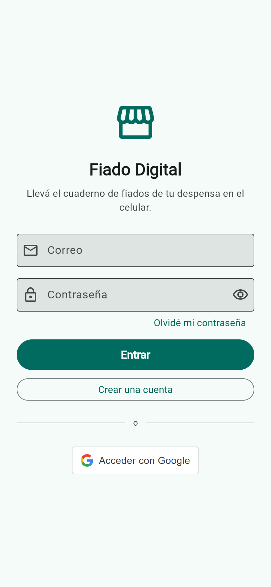
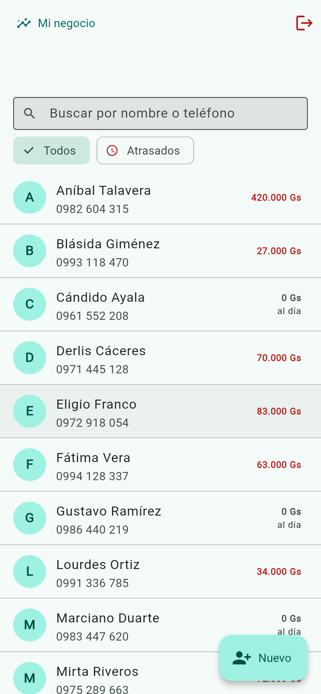
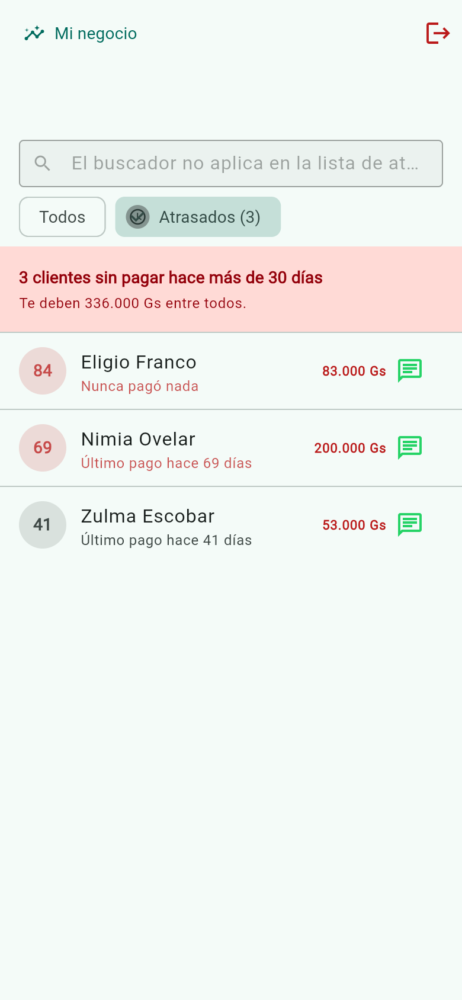
Zulma aparece con 41 días aunque compró hace dos. Es exactamente el caso de la sección 3.5: la mora se mide desde el último pago. Un cliente que sigue comprando y no paga es el que más conviene ver en esa lista, no el que menos.
Fiar, cobrar y corregir
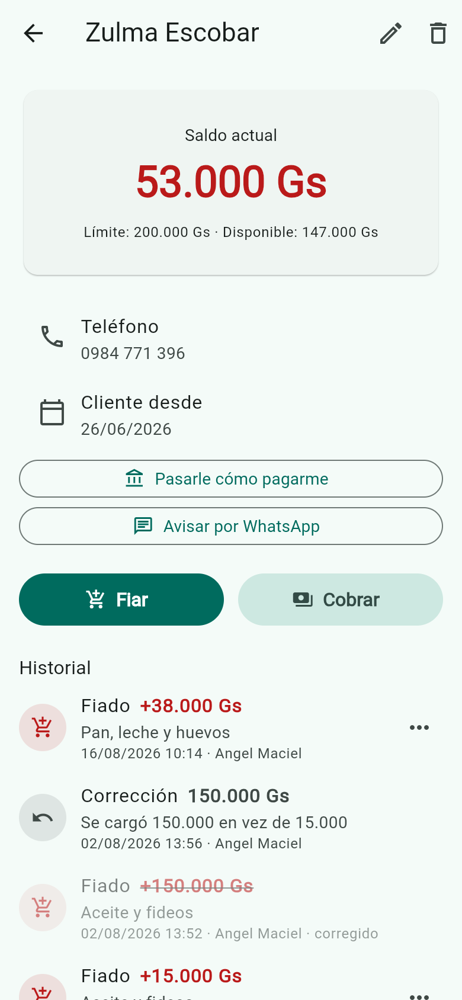
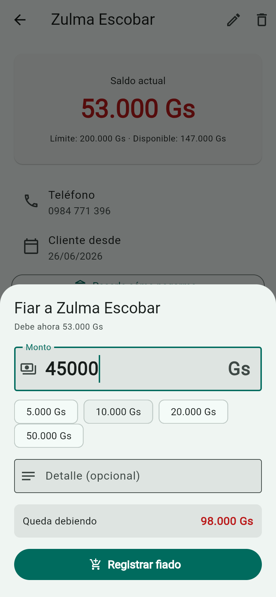
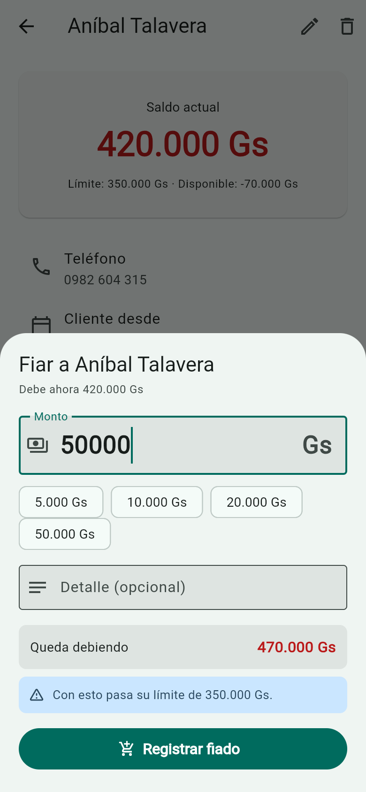
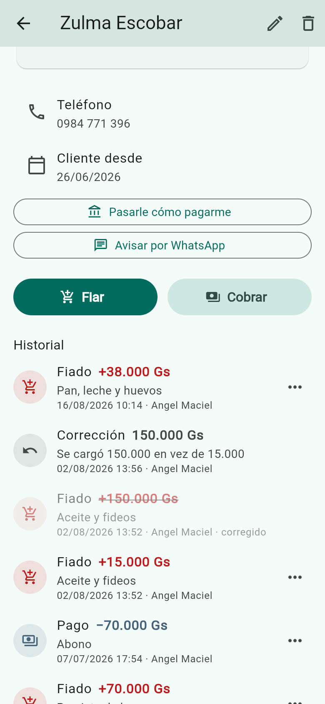
Los movimientos son inmutables: nunca se editan ni se borran. Un
error se arregla creando un movimiento de tipo AJUSTE
que apunta al original. El cuaderno de papel funciona igual —
tachado y anotado al lado— y es lo que permite que dueño y cliente
miren la misma cuenta sin discutir.
Cobrar por transferencia y mirar el negocio
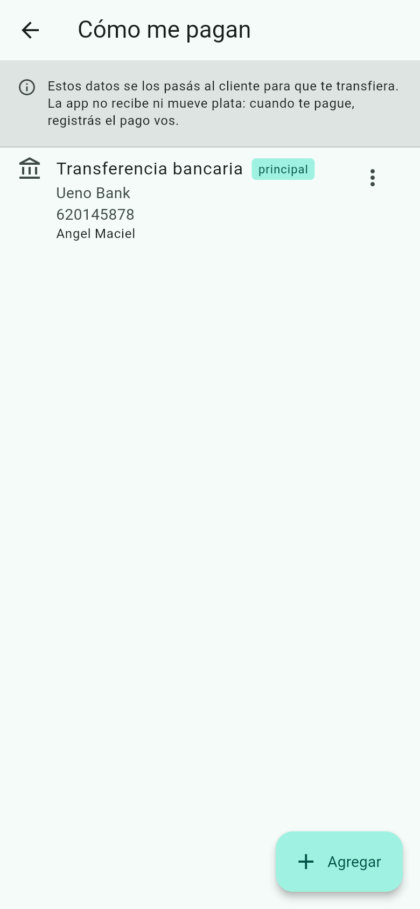
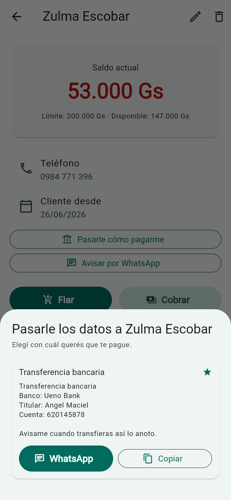
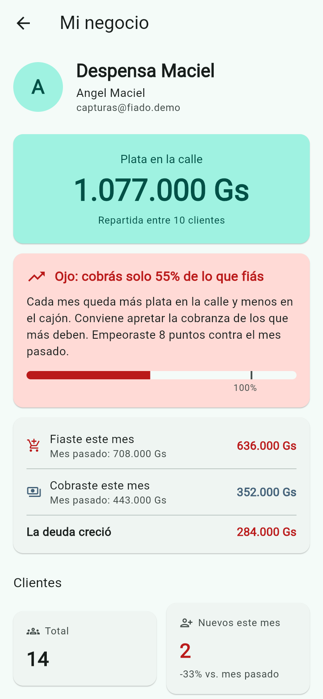
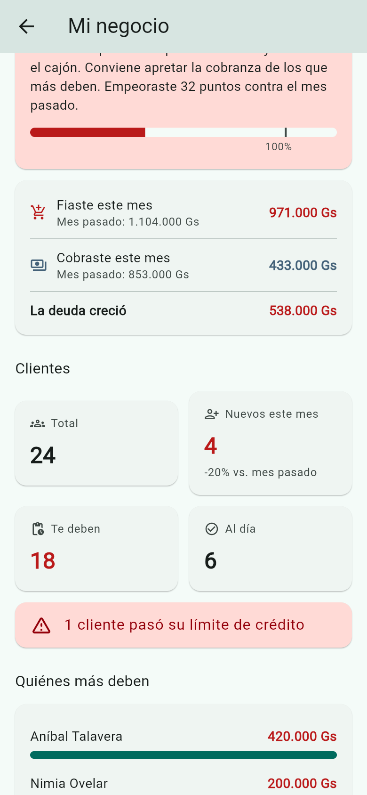
Sección 5Pruebas en dispositivo real
5.1 iPhone — la app Web servida en la red local
Se probó la versión Web desde un iPhone conectado a la red local, sirviendo la app desde la PC de desarrollo. Encontró tres defectos que no aparecían en el navegador de escritorio — los números 10, 11 y 12 de la sección 9.
Para reproducir el entorno:
# La app tiene que escuchar en todas las interfaces, no solo en localhost,
# y apuntar al backend por la IP de la red y no por localhost.
flutter run -d web-server --web-port=5000 --web-hostname=0.0.0.0 \
--dart-define=API_BASE_URL=http://<IP-DE-LA-PC>:3000/api \
--dart-define=GOOGLE_WEB_CLIENT_ID=<client-id-web>
Y CORS_ORIGINS del backend tiene que incluir
http://<IP-DE-LA-PC>:5000: la app servida desde
otra dirección es otro origen para el navegador.
Dos limitaciones conocidas de esta configuración, que no son defectos:
- El login con Google falla, porque ese origen no está autorizado en Google Cloud Console. Se prueba con correo y contraseña.
- La sesión no sobrevive a recargar la página. El almacenamiento seguro del navegador necesita
crypto.subtle, que solo existe en contexto seguro (HTTPS o localhost). La app lo detecta y cae a guardar la sesión en memoria.
5.2 Windows — login con Google por navegador
Windows es la única plataforma con un flujo de login distinto:
google_sign_in no la soporta, así que la app abre el
navegador contra el backend y espera los tokens en un servidor local
en el puerto 8765. Es el camino que más partes tiene y el último que
quedaba sin verificar.
| Paso | Resultado |
|---|---|
| Compilación de escritorio | OK 49 s con Visual Studio 2026 |
GET /api/auth/google | 302 hacia Google |
redirect_uri que emite el backend | http://localhost:3000/api/auth/google/callback |
¿Google acepta ese redirect_uri? | Sí devuelve la pantalla de login, no redirect_uri_mismatch |
| Vuelta al puerto 8765 con los tokens | OK la app entra sola, sin copiar nada |
Con esto quedan verificados los tres caminos de autenticación: correo y contraseña, Google en Web, y Google en Windows.
En la máquina de desarrollo, Norton 360 bloquea la creación de
fiado_digital.exe. El síntoma engaña: el compilador
dice LNK1104: no se puede abrir el archivo sobre una
ruta que no existe, y escribir ahí a mano da “acceso
denegado” aun con la app cerrada y en una carpeta recién creada.
No es un problema del proyecto ni del código, y —contra lo que parece— excluir la carpeta del antivirus no lo arregla. El bloqueo resultó ser por ruta y nombre exactos; cómo se acotó y cómo se resolvió está en la sección 5.3.
5.3 Windows — la base local cifrada
El modo sin conexión guarda los clientes y los movimientos en una base SQLite cifrada con SQLCipher dentro del dispositivo. Hasta acá era código que compilaba y pasaba el análisis, pero que nunca se había ejecutado: no había forma de afirmar que el cifrado estuviera activo de verdad.
Se compiló la app de escritorio, se entró con la cuenta de demostración y se leyó el archivo que quedó en disco.
| Verificación | Resultado |
|---|---|
| La base se crea al entrar | Sí — 20.480 bytes en %APPDATA%\com.fiadodigital\ |
| Primeros bytes del archivo | 92 d7 4c 09 8d 7b 68 39 … |
¿Empieza con SQLite format 3? | No — una base sin cifrar siempre empieza así |
| Nombres de clientes legibles en el archivo | Ninguno |
| Nombres de tablas legibles | Ninguno |
Que no aparezca ni el nombre de las tablas es lo que cierra el caso: si el binario empaquetado no fuera el de SQLCipher, el esquema se leería en claro aunque los datos no.
Esto verifica que la base existe, está cifrada y la app la usa. No verifica el circuito completo: anotar un fiado sin internet, que quede en la cola, y que se suba solo al volver la señal. Esa parte necesita cortar la red con la app abierta y mirarla.
El ejecutable de depuración no se podía generar: el compilador moría
con LNK1104 sobre una ruta que no existía. Excluir la
carpeta del antivirus no cambió nada.
La prueba que lo aclaró fue escribir archivos a mano: en esa misma
carpeta, otro.exe se creaba sin problema y
fiado_digital.exe daba “acceso denegado”; y ese mismo
nombre se escribía bien en cualquier otra carpeta. O sea, el bloqueo
era por ruta y nombre exactos — el rastro de una
cuarentena vieja, que una exclusión posterior no deshace.
La salida fue compilar en modo release, que escribe en
Release\ en vez de Debug\. Otra ruta, sin
bloqueo.
Sección 6Verificación en producción
El sistema está desplegado y es público: fiado-digital-web.onrender.com, con la API en Render y la base en Neon. Lo que sigue se ejecutó contra el sistema desplegado, no contra un entorno local.
| Caso | Resultado |
|---|---|
GET /api/health | 200 con db: ok, en 0,66 s |
GET /api/clientes sin token | 401 cerrado por defecto |
Login de la cuenta de demostración, con el Origin de la web | 200 sesión emitida |
| Petición desde un origen ajeno | Rechazada sin cabecera de CORS |
| Datos visibles con esa sesión | 24 clientes, 5 atrasados, 1.500.000 Gs |
redirect_uri que emite la API | Aceptado por Google — devuelve su pantalla de acceso, no redirect_uri_mismatch |
Cabeceras de helmet | HSTS, nosniff y X-Frame-Options presentes |
| Envío real de correo | 200 en 1,3 s — código de recuperación entregado |
El envío no está envuelto en try/catch: si el proveedor
falla, la petición devuelve 500. Así que un
POST /api/auth/recuperar-password que responde 200
en 1,3 segundos alcanza como prueba: un puerto
bloqueado habría tardado los treinta segundos del timeout antes de
fallar.
Lo que se rompió al desplegar
Siete problemas, y ninguno era un error de código: el mismo commit que anda en desarrollo andaba en producción. Fueron todos de configuración, y valen la pena porque tres de ellos no dan ningún mensaje que apunte a la causa.
| # | Síntoma | Causa |
|---|---|---|
| 1 | “Blueprint file render.yaml not found on main branch” | El archivo estaba en develop |
| 2 | “no such plan free for service type web” | Un sitio estático no lleva plan. Un campo de más rechaza el blueprint entero |
| 3 | “Exited with status 127” | NODE_ENV=production hace que npm omita las devDependencies, y el build necesita nest y prisma, que viven ahí |
| 4 | La API contestaba Not Found a todo | Ese hostname era de otro proyecto. Los dominios de Render son globales y por orden de llegada |
| 5 | redirect_uri_mismatch | El nombre de la variable pegado adentro del valor |
| 6 | Seguía fallando con el valor ya corregido | Un salto de línea invisible al final: la URL terminaba en %0A |
| 7 | La app le hablaba a la API equivocada | Los --dart-define se hornean en el build: cambiar la variable no alcanza, hay que recompilar |
El 3 dice “status 127” sin decir qué comando faltó. El 6 muestra una URL que a simple vista es idéntica a la registrada. Y el 7 no falla en ningún lado: la app le habla al servidor de otra persona, y todo parece andar hasta que no anda.
El plan gratuito de Render bloquea el SMTP saliente
por los puertos 25, 465 y 587. La configuración de Gmail que anda en
desarrollo falla en producción con Connection timeout —
un timeout, no un rechazo de credenciales, porque el paquete nunca
sale del servidor.
No se arregla cambiando de proveedor: todos usan esos puertos. Se arregla con uno que ofrezca el puerto 2525, que sí pasa. El paso a paso está en docs/despliegue.md.
Sección 7Compilación en Android
El APK de depuración compila. Eso confirma que SQLCipher, drift y las notificaciones locales funcionan en Android, no solo que pasan el análisis estático.
Requirió cinco correcciones encadenadas — desde un antivirus que rompía el almacén de certificados de Java hasta la versión del plugin de Gradle. Están documentadas paso a paso en app/README.md.
Sección 8Cómo se sacan las capturas
Las once capturas de la sección 4 no se sacan a mano. Las genera un script que abre la app, entra con una cuenta de demostración y recorre las pantallas:
cd backend && npm run demo:cuenta # cuenta + 14 clientes + 55 movimientos
cd tools/capturas && npm run capturar # las once capturas, ~90 segundosSe automatizó porque este documento va a crecer. Cuando cambie la interfaz, las once se regeneran con un comando, en vez de rehacerlas una por una y que algunas queden viejas sin que nadie lo note.
La cuenta de demostración se arma desde cero en cada corrida, con datos fijos. Así dos personas distintas que regeneren las capturas obtienen lo mismo, y ninguna tiene que usar su cuenta personal.
Los tres obstáculos de automatizar Flutter Web
Flutter no dibuja botones ni campos en la página: pinta todo sobre un canvas. Para una herramienta como Playwright, la app es una imagen. Los tres problemas que hubo que resolver están anotados en el script, porque cualquiera que lo modifique se los va a volver a encontrar:
| Síntoma | Causa | Solución |
|---|---|---|
| No encuentra ningún campo ni botón | La interfaz está dibujada, no construida con elementos | Activar el árbol de accesibilidad de Flutter, que publica los mismos nodos en paralelo al dibujo |
| El campo de contraseña queda vacío aunque se le escriba | Rellenar el valor de golpe no llega al campo real | Hacer clic y teclear, que es el camino que recorre una persona |
| Un elemento visible en pantalla “no existe” | Flutter publica cada widget de forma distinta: unos con el texto adentro y otros con todo en la etiqueta | Buscar por rol, por etiqueta y por texto antes de darse por vencido |
Cuando algo falla, el script guarda una captura de lo que había en pantalla y vuelca el árbol accesible completo. Sin eso, depurar una corrida de minuto y medio es adivinar.
Sección 9Defectos encontrados
Ordenados por cuándo aparecieron. Se listan porque el tipo de defecto dice más sobre el sistema que la cantidad.
| # | Defecto | Cómo se encontró |
|---|---|---|
| 1 | El servidor no arrancaba: una variable de entorno numérica sin anotación de tipo hacía que la validación rechazara el puerto | Primer arranque |
| 2 | TypeScript compilaba “sin errores” pero no generaba nada, porque la caché incremental quedó desincronizada de la carpeta de salida | Al reiniciar el backend |
| 3 | El APK de release habría quedado sin acceso a internet: Flutter solo declara ese permiso en depuración | Revisión del manifiesto |
| 4 | Android bloquea HTTP sin cifrar desde la versión 9, así que la app no podía hablar con el backend local | Revisión del manifiesto |
| 5 | No se podía borrar el teléfono de un cliente: el servidor rechazaba la cadena vacía | Al conectar la app con la API |
| 6 | El login con Google no funcionaba en Web: los navegadores bloquean el popup si no nace de un clic sobre el botón oficial de Google | Prueba en Chrome |
| 7 | La lista de clientes sobrevivía al cierre de sesión. Al entrar con otra cuenta se veían los clientes de la anterior | Probando el login con Google después de uno con correo |
| 8 | Tres de veinte peticiones simultáneas morían por agotamiento del pool de conexiones | Prueba de concurrencia |
| 9 | Los datos de demostración nacían todos con la misma fecha de alta, dejando la métrica de crecimiento en cero | Al revisar el panel |
| 10 | Google Sign-In se inicializaba dos veces por una carrera entre dos caminos del arranque | Prueba en iPhone |
| 11 | La app se colgaba sin mensaje ante cualquier error que no fuera de la API | Prueba en iPhone |
| 12 | Al abrirse el teclado, los formularios se iban tan arriba que tapaban lo que se estaba escribiendo | Prueba en iPhone |
| 13 | El paquete de cifrado de la base local estaba obsoleto y era un cascarón vacío | Al implementar el modo sin conexión |
| 14 | Un archivo temporal con un token de prueba se subió al repositorio | Auditoría del repositorio |
| 15 | “Pasarle cómo pagarme” decía que no había ninguna cuenta cargada la primera vez que se abría en cada sesión, teniéndolas | Al automatizar las capturas |
| 16 | La etiqueta “100%” de la barra de recuperación salía cortada al medio | Al revisar las capturas generadas |
| 17 | La franja decía “Sin internet, podés seguir anotando igual” aunque la base local no estuviera disponible, y cada fiado fallaba | Al verificar el modo sin conexión en Windows |
Vale la pena mirar la columna de la derecha. Ocho de los diecisiete no había forma de encontrarlos leyendo código: tres solo en un celular real, uno solo con veinte peticiones simultáneas, uno solo al cambiar de cuenta, dos solo al mirar capturas de las pantallas terminadas, y uno al ir a probar el modo sin conexión en Windows.
El defecto 7, el más serio
En una despensa donde el dueño y un empleado comparten la tablet del mostrador, la lista de clientes sobreviviendo al cierre de sesión era una filtración de datos entre cuentas. La causa: los proveedores de estado no se descartan solos, y la lista seguía en memoria con los datos de la sesión anterior.
El defecto 15, y por qué las capturas valen la pena
Este apareció al automatizar el recorrido. La captura que tenía que mostrar la hoja para compartir los datos bancarios mostró otra cosa:
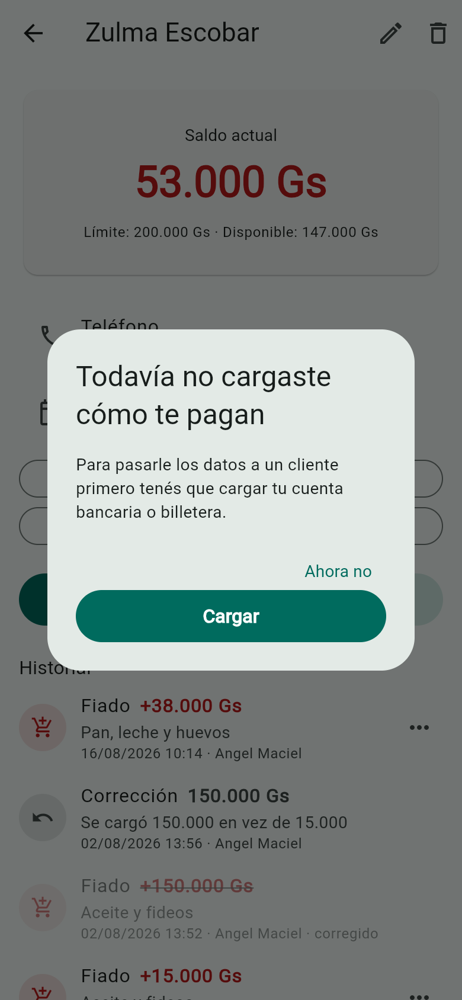
La hoja miraba los métodos de pago que hubiera en ese momento en memoria, y nadie los carga antes: la única pantalla que los pide es “Cómo me pagan”. Así que la primera vez en cada sesión la lista estaba vacía simplemente porque todavía no había llegado, y al dueño se le ofrecía cargar de nuevo algo que ya tenía.
La corrección fue esperar a que lleguen en vez de mirar lo que hubiera. Es un defecto que ninguna prueba unitaria iba a encontrar, porque nada estaba mal calculado: la lógica era correcta y el momento en que se la consultaba, no.
Sección 10Cómo agregar pruebas
Backend
Un archivo *.spec.ts junto al servicio que prueba. Prisma
se simula; no hace falta base de datos:
prisma = { cliente: { findFirst: jest.fn().mockResolvedValue(unCliente) } };
service = new MiServicio(prisma as unknown as PrismaService);App
Un archivo *_test.dart en app/test/. Se
prueba lógica pura —modelos, conversiones, decisiones— sin construir
widgets.
Capturas
Una pantalla nueva se agrega en
tools/capturas/capturar.mjs, y su figura en la
sección 4 de este documento.
El criterio
Antes de escribir una prueba, la pregunta útil no es “¿puedo probar esto?” sino “¿qué pasa si esto se rompe y nadie se entera?”. Si la respuesta es “un cliente termina debiendo un monto equivocado”, va con prueba. Si es “un texto se ve raro”, probablemente no valga el mantenimiento.